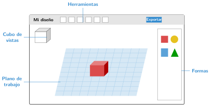
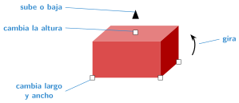

Primeros pasos en Tinkercad
🤔 Pienso5 min
Qué hago aquí: Piensa un momento y contesta con lo que ya sabes. No pasa nada si no lo sabes: es para empezar.
Entra en tinkercad.com con la cuenta del colegio. Pulsa Crear y Diseño 3D. ¿Qué ves en la pantalla?
📖 Leo y aprendo15 min
Qué hago aquí: Lee despacio, mira los dibujos y los ejemplos, y quédate con la idea clave del final.
Tinkercad es un programa para diseñar en 3D. Funciona en el navegador. Diseñas juntando formas sencillas, como piezas de construcción.

| Para… | Haz esto |
|---|---|
| girar la vista | arrastra con el botón derecho |
| acercar o alejar | gira la rueda del ratón |
Al pulsar una forma, aparecen unos tiradores. Con ellos cambias su tamaño y su posición. Si pulsas un tirador, puedes escribir la medida exacta.

✏️ Hago25 min
Qué hago aquí: Haz las actividades en orden. Empieza siempre por las básicas.
Arrastra al plano una caja, un cilindro y una esfera.
Gira la vista con el ratón. Después, usa el cubo de vistas para ver las formas desde arriba.
Haz una placa de 80 × 40 × 4 mm.
Pon encima de la placa un cilindro de 20 mm de ancho y 30 mm de alto.
Haz una mesa: un tablero de 60 × 40 × 4 mm y cuatro patas de 5 × 5 × 30 mm. Comprueba que nada flota.
🚀 Amplío (si quieres saber más)
Qué hago aquí: ¿Has terminado? Lee la curiosidad o elige el reto. Es voluntario.
Con la forma Texto, escribe tu nombre sobre una placa. ¡Ya tienes un llavero!
✅ Compruebo5 min
Qué hago aquí: Contesta sin mirar la ficha y marca cómo lo llevas.